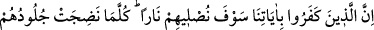
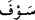

KÂFİR VE MÜ’MİNİN
ÂKIBETİ
56- Şüphesiz âyetlerimizi inkâr edenleri gün gelecek bir ateşe sokacağız; onların
derileri pişip acı duymaz hâle geldikçe, derilerini başka derilerle değiştiririz ki acıyı
duysunlar! Allah dâimâ üstün ve hikmet sâhibidir.
57- İnanıp iyi işler yapanları da zemîninden ırmaklar akan cennetlere sokacağız.
Orada ebedî olarak kalacaklardır. Orada onlar için tertemiz eşler vardır ve onları
koyu bir gölgeye koyarız.
“Şüphesiz âyetlerimizi” yâni Kur’ân’ı ve diğer mu’cizeleri “inkar edenleri gün
gelecek” büyük ve dehşetli “bir ateşe sokacağız; onların derileri piştikçe” yanıp
kavruldukça “derilerini başka derilerle değiştiririz ki acıyı duysunlar!” Yâni, acıları
devam etsin ve kesilmesin. Bu, izzet sâhibi bir kimseye “Allah izzetini artırsın!” demek
gibidir. Bunun mânâsı, “Allah izzetini devam ettirsin ve artırsın” demektir. “Sevfe
”
kelimesi, tehdid etmek ve gözdağı vermek için kullanılır. Hem de vaad için kullanılır ve
te’kid ifâde eder. “Gayr” kelimesi, bir şeyin zıddı kastedilerek kullanılır. Mesela
“Gece gündüzün gayrıdır” denir. Yine bir şeyin değişen misli için de kullanılır. Sıcak su
soğuduğu zaman “Bu onun gayrıdır.” denir. Bu âyette kastedilen de budur. Yâni, onlara
yandığı zaman yanıp kavrulan derileri yerine maddeten aynısı olsa da sûreten başka
olan yeni bir deri veririz. Hâsılı yanan deriler başka bir sûrette tekrar verilirler. Tıpkı
“Yüzüğümü eritip başka bir yüzük yaptım.” sözünde olduğu gibi. Buradaki ikinci yüzük,
birincinin aynısıdır. Sâdece dökümü değişmiştir.
Eğer “Kendisiyle isyana düşülmüş deriler kavrulduğu zaman Allah Teâlâ yerlerine
başka deriler yaratır da onlara azap ederse bu isyan etmemiş derilere azap etmek demek
olur ki böyle bir şey câiz değildir.” dersen derim ki: “Azap, mutlak olarak deriye değil,
derinin isyan eden hassas kısmına olacaktır. Şahıs bir olmakla beraber azap ancak isyan
eden kısma uygulanacaktır.
Hasan Basrî der ki: “Cehennem ateşi onları günde yetmiş kere yakıp kül eder. Yakıp